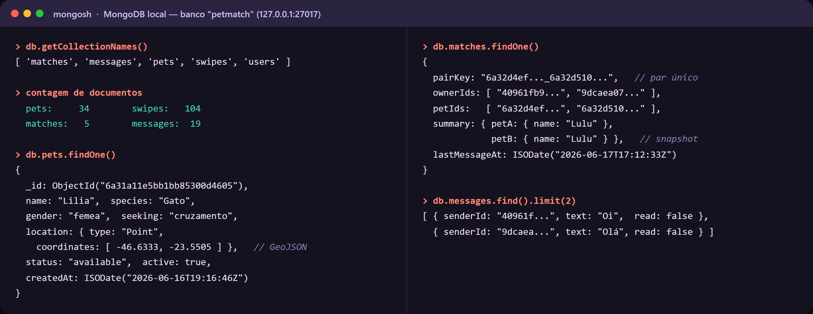
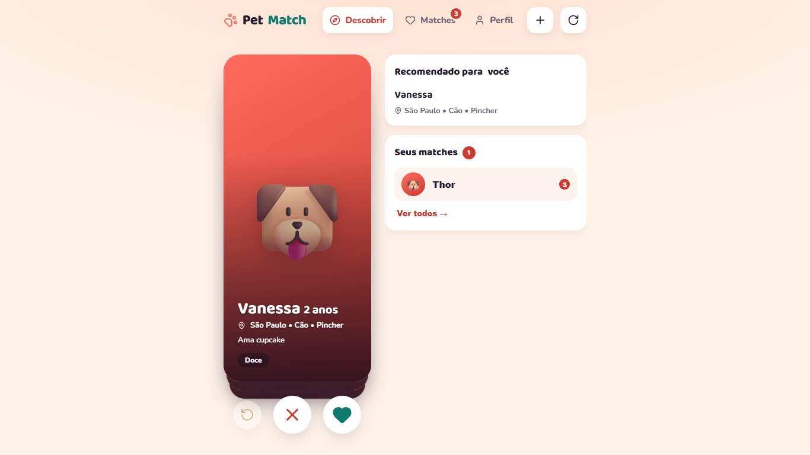
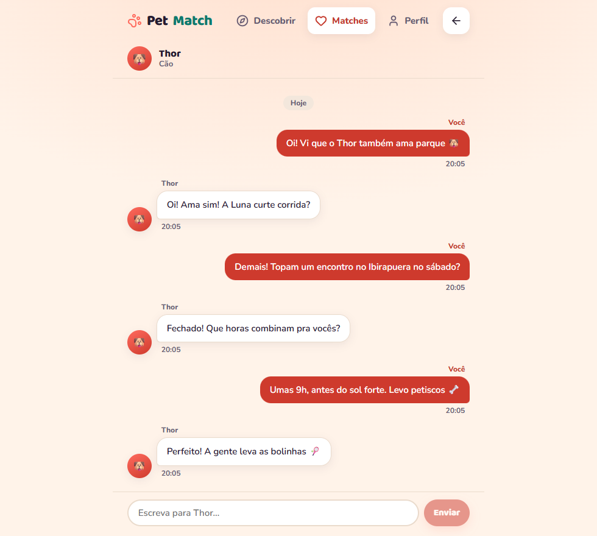
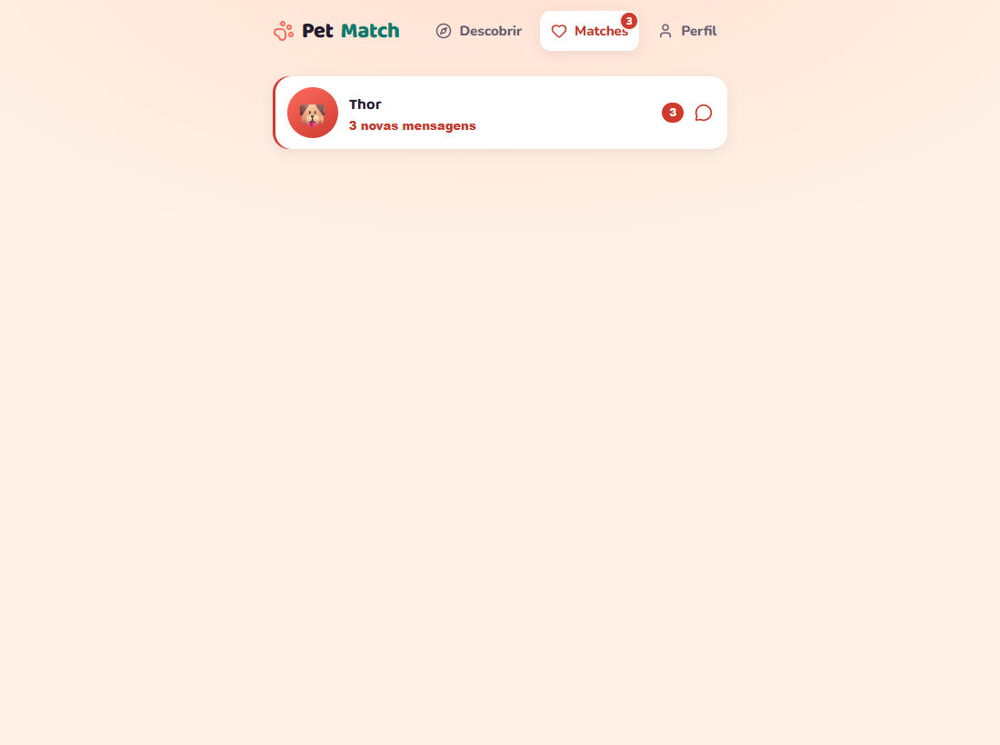

PetMatch 🐾
“Tinder para pets” — conecta tutores para cruzamento ou socialização com recomendação por geolocalização, swipe, match recíproco, chat e notificações.
Como vamos apresentar
O problema e a solução
Achar um par compatível para o pet (brincar ou cruzar) é difícil: grupos de rede social são bagunçados e ignoram proximidade e perfil. O PetMatch traz a fluidez de um app de relacionamento para os pets.
Recomendação por geo
Feed prioriza pets próximos (índice 2dsphere) e compatíveis.
Swipe & match recíproco
Curtir/passar arrastando o card; match só quando os dois curtem.
Chat & notificações
Conversa por match com badge de mensagens não lidas.
Monorepo de serviços independentes
Backend = cérebro
NestJS expõe o CRUD e orquestra; valida DTOs e publica o Swagger em /docs.
Motor = ranking
FastAPI ordena o feed por proximidade + compatibilidade; o Mongo é a fonte da verdade.
O documento Pet (NoSQL)
Um documento agrega perfil, arrays e um subdocumento GeoJSON. O índice 2dsphere habilita busca por proximidade.
@Schema({ collection: 'pets', timestamps: true })
export class Pet {
@Prop({ type: ObjectId, ref: 'User', required: true }) ownerId!: Types.ObjectId;
@Prop({ required: true }) name!: string;
@Prop({ enum: ['socializacao', 'cruzamento', 'ambos'] }) seeking!: string;
@Prop({ type: [String], default: [] }) temperament!: string[];
@Prop({ type: PetLocation, required: true }) location!: PetLocation; // GeoJSON [lng,lat]
}
// Índice geoespacial: busca por proximidade ($nearSphere / $geoNear).
PetSchema.index({ location: '2dsphere' });
CRUD de pets 🐾
As quatro operações do pet, mapeadas direto para a API REST — tudo persistido no MongoDB (escritas só pelo dono).
Criar
POST /pets — cadastra um novo pet.
Ler
GET /pets & /pets/feed — lista e feed.
Atualizar
PATCH /pets/:id — edita o perfil.
Excluir
DELETE /pets/:id — remove o pet.
Swipe & match recíproco
Um like só vira match se o alvo já tinha curtido a origem. Índice único (petId, targetPetId) torna o swipe idempotente.
await this.swipeModel.updateOne({ petId, targetPetId }, { $set: { type: dto.type, ownerId } }, { upsert: true }); // idempotente if (dto.type !== 'like') return { matched: false }; // Match recíproco: o alvo JÁ precisa ter curtido a origem. const reciprocal = await this.swipeModel.exists({ petId: targetPetId, targetPetId: petId, type: 'like' }); if (!reciprocal) return { matched: false }; const match = await this.matchesService.ensureFromReciprocalLike(petId, targetPetId); return { matched: true, matchId: match?.id };
Recomendação: geo + conteúdo
recall (quem é elegível) → ranking (em que ordem). Se o motor cair, o feed usa o Mongo direto.
def recommend(db, request, settings): origin = fetch_origin_pet(db, request.pet_id) # 1) RECALL — candidatos elegíveis por geolocalização + filtros candidates = run_recall(db, origin, request.coordinates, radius_km, seeking, ...) # 2) RANKING — ordena por compatibilidade (conteúdo) + proximidade ranked = rank_candidates(origin, candidates, weight_distance=..., weight_content=...) return RecommendationResponse(count=len(ranked), results=ranked)
$nearSphere direto no MongoDB.Conversas com aviso de novas mensagens 💬
Cada match vira um chat — e o app avisa quando chega mensagem nova, na navegação e na lista.
Chega mensagem
O outro tutor escreve na conversa do match.
Badge aparece
Contador de não lidas no menu “Matches” e em cada conversa.
Abriu, zerou
Ao abrir o chat, marca como lida e o badge some.
Dados persistidos no banco
34 pets
GeoJSON, arrays e subdocumentos.
5 matches · 104 swipes
Relações pet↔pet desnormalizadas.
19 mensagens
Chat persistido com flag read.

127.0.0.1:27017/petmatch).A aplicação



Experiência com NoSQL & MongoDB
- Documento = JSON do front. O
toJSONsó troca_idporid; menos tradução. - Esquema flexível. Campos
Mixed(compatibility/metadata) evoluem sem migração. - Geo nativo.
2dsphere+$nearSphereresolvem “pets perto de mim”.
- Aggregation. Não lidas por conversa em uma consulta (
$match→$group). - Desnormalização.
match.summaryevita joins e deixa a lista instantânea. - Sem joins ⇒ integridade fica na aplicação (ex.:
pairKeyúnica).
Obrigado! 🐾
npm run dev + npm run seed).Lucas · Gustavo · Jonah · Luis · Mateus